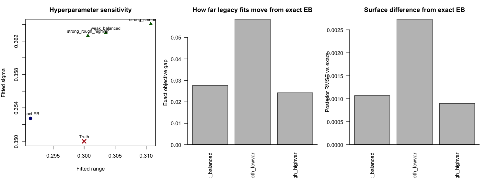

Generated on 2026-04-12 15:48:33 CDT
P(range < rho0) = alpha_r.P(sigma > sigma0) = alpha_sigma.(alpha_r, alpha_sigma) pushes toward smoother,
lower-variance fields.(alpha_r, alpha_sigma) pushes toward rougher,
higher-variance fields.| method | fitted_range | fitted_sigma | fitted_beta | runtime_sec | exact_loglik | posterior_corr_vs_truth | posterior_rmse_vs_truth |
|---|---|---|---|---|---|---|---|
| Exact EB | 0.291351 | 0.352736 | 0.195882 | 14.452000 | -89.024405 | 0.906784 | 0.149820 |
| scenario | range_prob | sigma_prob | fitted_range | fitted_sigma | fitted_beta | runtime_sec | raw_mlik | exact_loglik_at_legacy | exact_gap_to_optimum | posterior_corr_vs_exact | posterior_rmse_vs_exact | posterior_corr_vs_truth | posterior_rmse_vs_truth |
|---|---|---|---|---|---|---|---|---|---|---|---|---|---|
| weak_balanced | 0.500000 | 0.500000 | 0.303481 | 0.362997 | 0.195837 | 5.443000 | -89.052058 | -89.052058 | 0.027653 | 0.999996 | 0.001070 | 0.906751 | 0.149895 |
| strong_smooth_lowvar | 0.100000 | 0.100000 | 0.310747 | 0.364053 | 0.195600 | 4.627000 | -89.082946 | -89.082946 | 0.058541 | 0.999967 | 0.002732 | 0.906806 | 0.149786 |
| strong_rough_highvar | 0.900000 | 0.900000 | 0.300609 | 0.362631 | 0.195931 | 4.666000 | -89.048650 | -89.048650 | 0.024245 | 0.999999 | 0.000898 | 0.906722 | 0.149947 |
Figure:

0.5, 0.5)
gives fitted (range, sigma) = (0.3035, 0.3630).